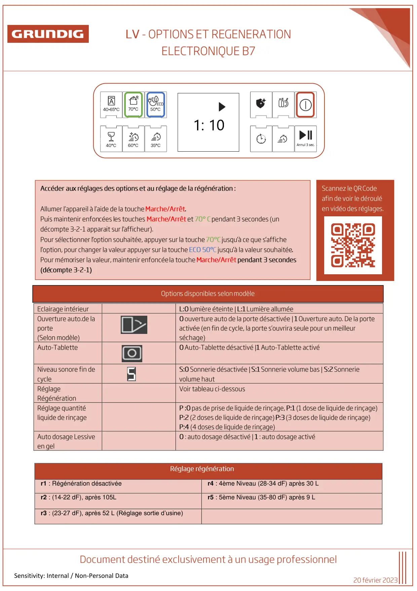

Note Info lave vaisselle Grundig Regeneration B7

Sensitivity: Internal / Non-Personal Data0r1 : Régénération désactivéer4 : 4ème Niveau (28-34 dF) après 30 Lr2 : (14-22 dF), après 105Lr5 : 5ème Niveau (35-80 dF) après 9 Lr3 : (23-27 dF), après 52 L (Réglage sortie d’usine)
1 / 1